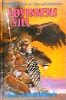

Løvinnens sjel
Kart: Vanja E. Knudtsen
Bladkompaniet 1990
Innbundet 254 s.
ISBN 82-509-2526-2
Heftet utgave 1999
ISBN 82-509-4114-4
Tilrettelagt lydbok
Boka finnes som norsk lydbok hos Tibi – biblioteket for tilrettelagt litteratur. Verdt å merke: Tibi er kun for barn, ungdom, voksne og studenter som har vansker med å lese visuell tekst og trykte bøker på grunn av funksjonsnedsettelse eller sykdom. Lånerett krever dokumenterte lesevansker.
Baksidetekst
Tredje bind i trilogien om krigerkvinnene. En frittstående fortsettelse av Våpensøstrene og Rød måne. - Et vunnet slag er ikke bare en seier, sa medisinkvinna bittert. - Det er også et tap. Jeg innser at slikt som dette kan synes nødvendig, men jeg lurer samtidig på om vi ikke allerede har tapt i det øyeblikket vi møter vold med vold.
Ingar Knudtsen debuterte i 1975, og er nå en av våre mest anerkjente forfattere av fantastisk litteratur. Hans roman Rød måne ble i 1989 tildelt NORCON-prisen for beste norsk SF og Fantasyroman.
Forfatterens kommentar
Personlig synes jeg at dette er den beste av de tre amasonebøkene. Full av innfall og utfall og eksperimenter, som f.eks. bruken av et slags “yoruba” som nagaristammens språk, to parallelle handlinger forskjøvet i tid, og så er det sist men ikke minst M’belas bok. Den eneste av hovedpersonene fra den første boka som ble med hele veien. Det er også ei bok om makt, og hva som skjer med sjøl den beste når makta blir for viktig, når trangen til å kontrollere overskygger alt. På ett vis er det ei bittersøt bok. Slutten på et prosjekt som underveis i hver fall overbeviste meg om at amasonene eksisterte! De var ingen fiksjon drømt opp av greske mytemakere. Ordet amasone er ikke en gang gresk. Det betyr antakelig “månedyrker”, eller “de som tilber månen”, og ordet kommer ikke fra gresk. Glem leksikonforfattere som gjentar det som andre leksikonforfattere har sagt før dem! Boka ble også en personlig seier. Og ei språklig omveltning. Fra og med denne boka ble ikke bare alle mine bøker på Bladkompaniet påmeldt til innkjøpsordninga, jeg fant også nye konsulenter, kanskje for aller første gang konsulenter som forsto hvilke litterære målsettinger jeg har med bøkene mine. Hva det er jeg forsøker å gjøre. Hvordan jeg vil skrive og hvorfor og hvordan, og som var frigjorte nok i forhold til de litterære moter som til eihver tid gjelder til å gi meg rom. Frihet. Jeg tar sjansen på å sitere slutten på boka: “Månen lå like over bakketoppen i øst og med ett syntes hun at den liknet på ansiktet til ei løvinne. Under det gule måneansiktet danset det fram stadig nye silhuetter av amasoner til hest og til fots. Det var umulig å si om de kom eller gikk.” Dessverre gikk de. Hvis ikke hadde verden kanskje sett mye annerledes ut. Bedre, tror jeg.
Det er min oppriktige meining at disse bøkene bør bli gitt ut på nytt. I ei eller annen form.
Kart av Vanja E. Knudtsen.
(Klikk på kartet for å se en større og mer detaljert versjon.)
{kind=link}